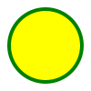

<!-- 
  SVG <svg>

    É um amarcação, estilo html, mas não é para textos, e sim para fazer imagens.

    Para entender melhor
    - Imagem rasterizada x Imagem vetorizada

    Benefícios
    - Mais leve
    - Mais detalhada
    - Maior acessibilidade e SEO
    - Pode ser editada via CSS ou atributos

    Desvantagens
    - Pode ser mais complicado de trabalhar
    - Quanto mais complexa a imagem, mais trabalho para o navegador
    - Navegadores mais antigos nãos possuem suporte a essa tag

    Para fotografias, ainda prefira usar imagens raterizadas (imagens via pixels).
    Extensão: .png, .jpg, .jpeg

    O svg pode ser criado pelo figma.
    
    https://developer.mozilla.org/pt-BR/docs/Web/SVG
 -->

 

 <svg width="300" height=" 200">
  <rect width="100%" height="100%" fill="blue" />
 </svg>